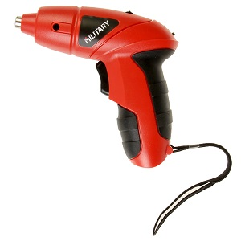

Аккумуляторная отвёртка Military SD4.8

Компактная и эргономичная отвертка с NiCd аккумулятором. Оснащена подсветкой рабочей зоны для удобства эксплуатации в слабоосвещенных местах и индикатором уровня заряда. Шнурок на запястье позволит освободить руки в случае необходимости.
Основные характеристики
- Максимальный крутящий момент: 2.5 Нм;
- Ёмкость аккумулятора: 0,6Ач;
- Аккумулятор в комплекте: один встроенный;
- Макс. обороты: 180 об/мин;
- Подсветка рабочей зоны: есть;
Подробное описание
Отвертка MILITARY SD4.8 работает от встроенного NiCd аккумулятора на 4,8 В. Быстро закручивает и выкручивает саморезы, сверлит небольшие отверстия. Подходит для работ по листовому металлу, ДСП, дереву, пластику. В комплекте зарядное устройство.
- Минимальная цена и только нужные функции. Оптимально, если вы используете отвёртку несколько раз в месяц и не хотите переплачивать за профессиональный инструмент.
- Отвёртка весит около 500 грамм, не занимает много места в ящике с инструментами. Удобна при сборке мебели – вы сможете долго работать на весу и подлезать в узкие пространства.
- Прорезиненная рукоятка надёжно фиксируется в ладони. Отвёртка не выпадает и не скользит.
- Рабочая область подсвечивается фонариком. Он включается отдельной кнопкой
- Удобный переключатель направления вращения – на одной клавише.
- Индикатор заряда аккумулятора. Светодиоды-индикаторы включаются нажатием кнопки.
Похожие товары
Вам также могут понадобиться
- Биты
- Свёрла
- Защитные очки
© Geekbrains 2018. Все права защищены